May 2021 (version 1.57)
Update 1.57.1: The update addresses these issues.
The Workspace Trust feature addresses CVE-2021-34529.
Downloads: Windows: User System Arm64 | Mac: Universal Intel silicon | Linux: deb rpm tarball Arm snap
Welcome to the May 2021 release of Visual Studio Code. There are a number of updates in this version that we hope you will like, some of the key highlights include:
- Workspace Trust - Extra security against code execution when browsing unfamiliar source code.
- New Getting Started experience - Helps you quickly set up and learn about VS Code.
- Remote Repositories - Browse and edit code without locally cloning repositories.
- Terminal tabs - Tabs let you easily create, manage, and group multiple open terminals.
- Edge browser debugging - Integrates the Microsoft Edge Developer Tools directly into VS Code.
- JSDoc @link support - Add @link tags in your comments for fast symbol navigation.
- Go to Definition for non-code files - Quickly jump to images and stylesheets.
- Notebook API finalized - Notebook API for native notebook support in VS Code.
- VS Code at Build 2021 blog post - Catch up with on-demand sessions featuring VS Code.
If you'd like to read these release notes online, go to Updates on code.visualstudio.com.
Watch a highlight of the new features in this version in the VS Code team's release party. You can find the recording of the event on our YouTube channel.
Insiders: Want to try new features as soon as possible? You can download the nightly Insiders build and try the latest updates as soon as they are available.
Workbench
Workspace Trust
Visual Studio Code takes security seriously and wants to help you safely browse and edit code no matter the source or authors. The Workspace Trust feature lets you decide whether your project folders should allow or restrict automatic code execution.
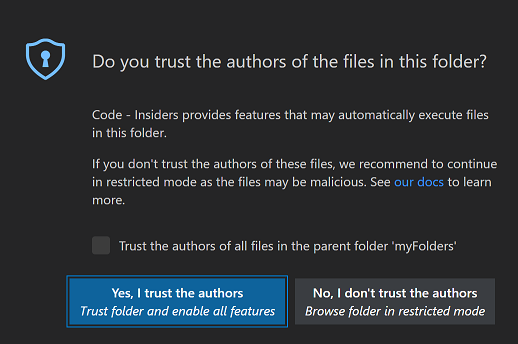
Note: When in doubt, leave a folder in Restricted Mode. You can always enable trust later.
Safe code browsing
It's great that there is so much source code available on public repositories and file shares. No matter the coding task or problem, there is probably already a good solution available somewhere. However, using open-source code and tools does have risks and you can leave yourself open to malicious code execution and exploits.
Workspace Trust provides an extra layer of security when working with unfamiliar code by preventing automatic code execution when a workspace is open in Restricted Mode.
Note: If you want to disable the Workspace Trust feature, you can set
security.workspace.trust.enabledtofalse. Only disable Workspace Trust if you are confident that you know the source and integrity of the files you are working with.
Restricted Mode
When prompted by the Workspace Trust dialog, if you choose No, I don't trust the authors, VS Code will go into Restricted Mode to prevent code execution. The workbench will display a banner at the top with links to Manage your folder via the Workspace Trust editor and Learn More taking you to the Workspace Trust user guide.
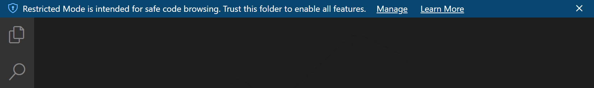
You will also see a Restricted Mode badge in the Status bar.
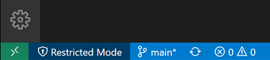
Restricted Mode tries to prevent automatic code execution by disabling or limiting the operation of several VS Code features: tasks, debugging, workspace settings, and extensions.
To see the full list of features disabled in Restricted Mode, you can open the Workspace Trust editor via the Manage link in the banner or by clicking the Restricted Mode badge in the Status bar.
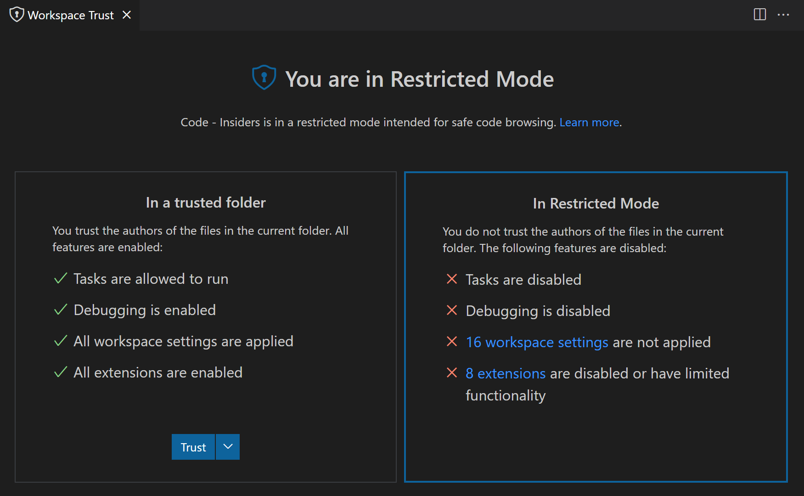
Trusting a workspace
If you trust the authors and maintainers of a project, you can trust the project's folder on your local machine. For example, it is usually safe to trust repositories from well-known GitHub organizations such as github.com/microsoft or github.com/docker. The initial Workspace Trust prompt when you open a new folder allows you to trust that folder and its subfolders.
You can also bring up the Workspace Editor and quickly toggle a folder's trusted state. There are several ways to bring up the Workspace Editor dialog.
When in Restricted Mode:
- Restricted Mode banner Manage link
- Restricted Mode Status bar item
You can also at any time use:
- Workspaces: Manage Workspace Trust command from the Command Palette (⇧⌘P (Windows, Linux Ctrl+Shift+P))
- Manage Workspace Trust from the Manage gear in the Activity bar
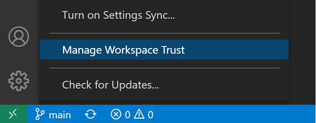
Selecting folders
When you trust a folder, it is added to the Trusted Folders & Workspaces list displayed in the Workspace Trust editor.
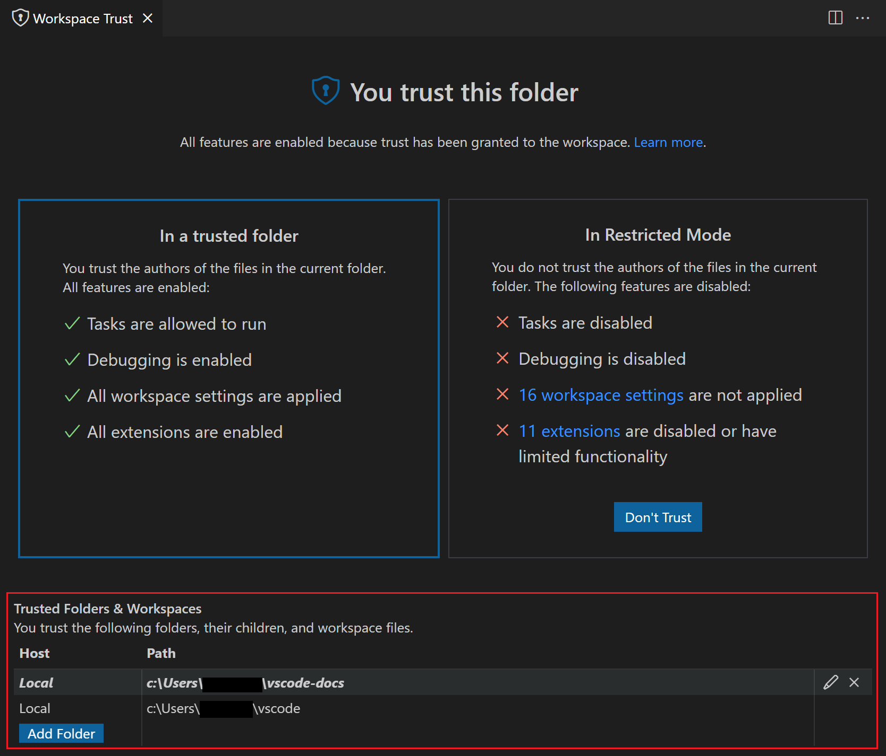
You can manually add, edit, and remove folders from this list and the active folder enabling trust is highlighted in bold.
You also have the option to trust the parent folder. This will apply trust to the parent folder and all subfolders. This can be helpful if you have many folders with trusted content collocated under one folder.
Enabling extensions
What happens if you want to use Restricted Mode but your favorite extension doesn't support Workspace Trust? This can happen if an extension, while useful and functional, isn't being actively maintained and hasn't declared their Workspace Trust support. To handle this scenario, you can override the extension's trust state with the extensions.supportUntrustedWorkspaces setting.
Note: Be careful overriding an extension's Workspace Trust support. It may be that the extension author has a good reason for disabling their extension in Restricted Mode.
Below you can see the user settings.json entry for the Prettier extension.
"extensions.supportUntrustedWorkspaces": {
"esbenp.prettier-vscode": {
"supported": true,
"version": "6.4.0"
},
},
You can either enable or disable Workspace Trust support with the supported attribute. The version attribute specifies the exact extension version applicable and you can remove the version field if you want to set the state for all versions.
If you'd like to learn more about how extension authors evaluate and determine which features to limit in Restricted Mode, you can read the Workspace Trust Extension Guide.
Settings
Below are the available Workspace Trust settings:
security.workspace.trust.enabled- Enable Workspace Trust feature. Default is true.security.workspace.trust.startupPrompt- Whether to show the Workspace Trust dialog on startup. Default is to only show once per distinct folder or workspace.security.workspace.trust.emptyWindow- Whether to always trust an empty window (no open folder). Default is true.security.workspace.trust.untrustedFiles- Controls how to handle loose files in a workspace. Default is to prompt.extensions.supportUntrustedWorkspaces- Override extension Workspace Trust declarations. Either true or false.
To learn more about Workspace Trust, you can read the Workspace Trust user guide.
New Getting Started experience
Over the past couple iterations, we have been working on refreshing the welcome page for VS Code, and we're happy to announce that starting this iteration our new welcome page (Getting Started) is enabled by default for all users. In this new experience, both the core of VS Code and installed extensions can contribute "walkthroughs" to the welcome page, which are designed to help you get started in either VS Code itself or with a new extension. For example, the Luna Paint extension contributes a Walkthrough with guides to help understand each component of the image editor.

Additionally, once you've completed (or dismissed) all walkthroughs, VS Code rearranges the contents to double the number of recent workspaces accessible with one click.
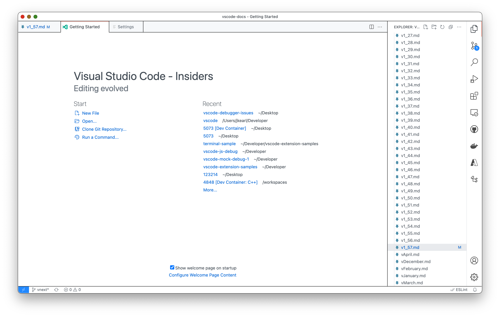
Settings
workbench.startupEditor- Controls the default editor to show on startup. The new valuegettingStartedreplaces the old defaultwelcome. Some of the other available options includereadme,gettingStartedInEmptyWorkbench,newUntitledFile, ornone.workbench.welcomePage.walkthroughs.openOnInstall- Whether to automatically open extension-contributed walkthroughs upon install.
The new page will be called Getting Started until we phase the existing Welcome page out entirely.
Remote Repositories
The Remote Repositories extension was introduced as a built-in preview feature in 1.56 and is now publicly available, but it is no longer built-in to VS Code so you'll need install it from the VS Code Marketplace.
As a quick recap, the Remote Repositories extension allows you to instantly browse, search, edit, and commit to any GitHub repository directly from within VS Code without having to clone or have the repository locally.
In this iteration, while we were mainly focused on bug fixing and polishing the extension for release, we did add a few new features. You can now see your remote repositories in the Remote Explorer to quickly open or compare any uncommitted changes you may have. Additionally, you can apply changes, from the same repository, to the current remote repository allowing you to quickly and easily move uncommitted changes from one branch to another.
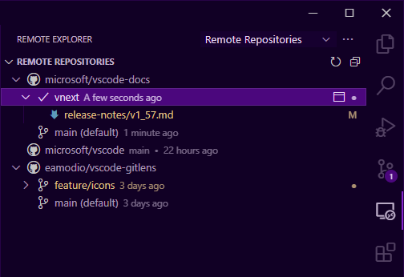
Theme: Amethyst Dark Theme
To learn more about Remote Repositories, you can check out the Remote Repositories blog post and YouTube video.
Improved editor drag and drop across windows
Support for dragging editors to other windows was improved in this release. You can now drag diff editors, custom editors, and the entire editor group to another window to open the editors there.
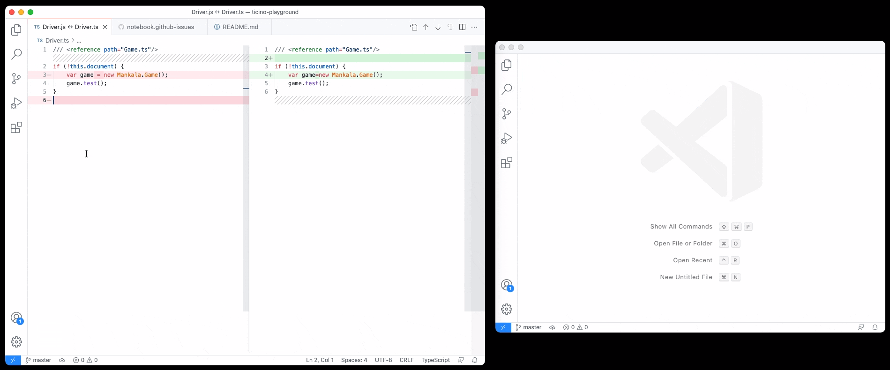
Theme: GitHub Light Theme
Note: If you frequently use this feature, make sure to have Auto Save enabled (files.autoSave) so that changes in the one window are automatically reflected in the other window.
Removed Cmd+W / Ctrl+W keybinding to close window when no editor is opened
We have gotten feedback that users are frustrated when the VS Code window (instance) suddenly closes after having closed the last editor via rapid Cmd+W / Ctrl+W usages. A quick poll in the team also revealed that many people had unassigned this keybinding for closing the window, so we went ahead and removed Cmd+W / Ctrl+W as a keybinding to close the window when no editor is opened.
You can easily bring back the keybinding by configuring it as follows in your user keybindings.json file:
macOS
{
"key": "cmd+w",
"command": "workbench.action.closeWindow",
"when": "!editorIsOpen && !multipleEditorGroups"
}
Windows/Linux
{
"key": "ctrl+w",
"command": "workbench.action.closeWindow",
"when": "!editorIsOpen && !multipleEditorGroups"
}
Note: On all platforms, there is a dedicated assigned keybinding to close the window:
- macOS:
Cmd+Shift+W - Linux:
Alt+F4 - Windows:
Alt+F4
Notebook layout customization
We added several notebook layout settings this month to allow users to customize the notebook editor for their workflow. The customizations that are turned on by default are:
Notebook Toolbar
We added a notebook toolbar in the editor, in which you easily access actions like insert cell, run all cells or switch kernels. The toolbar can be disabled by setting notebook.globalToolbar to false.
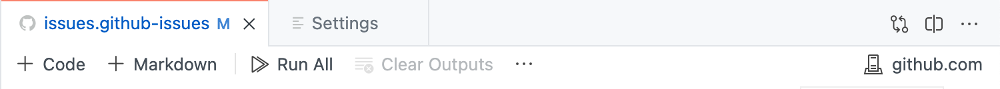
Output toolbar
The Clear Cell Outputs action and the button to pick a different output renderer or mimetype are now combined into a single ... ellipsis menu next to cell outputs. This can be disabled by setting notebook.consolidatedOutputButton to false
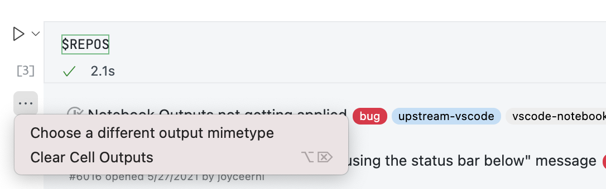
Focused cell highlight on gutter
VS Code now supports rendering focused cell highlight in the gutter area of a cell, which helps identify which cell is focused when a notebook contains many cells. The setting notebook.cellFocusIndicator can be either gutter, the new default, or border to highlight the entire cell border.
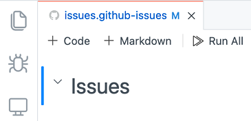
Show folding icon on mouse over
The folding icon on Markdown cells is now visible on mouse over rather than visible all the time. You can customize the behavior by setting notebook.showFoldingControls to either mouseover (default) or always.
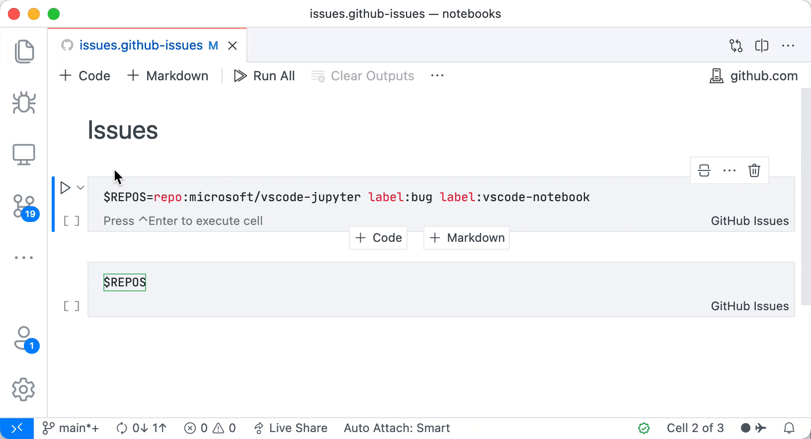
The full list of notebook layout settings implemented this month are:
notebook.cellFocusIndicator: Adds the option for cells to indicate their focused state with a colored bar on the side of the cell (gutter), similar to Jupyter.notebook.cellToolbarVisibility: Determines whether the cell toolbar should appear when the cell is focused, or hovered. The default is to only show up when a cell is focused.notebook.compactView: When enabled, cells are rendered in a more compact style with less empty space. It is enabled by default.notebook.consolidatedOutputButton: The Clear Cell Outputs action and the button to pick a different output renderer or mimetype have been combined into a single ... ellipsis menu next to cell outputs. The new menu can be disabled with this setting.notebook.consolidatedRunButton: There are two new actions, Execute Above Cells and Execute Cell and Below. They will appear in the cell toolbar by default, but enabling this setting moves them to a new context menu next to the execute button.notebook.dragAndDropEnabled: Disables drag and drop for cells. You can still rearrange cells using the commands (Alt+Up/Alt+Down by default).notebook.globalToolbar: Adds a toolbar to the top of the notebook editor.notebook.insertToolbarLocation: Controls whether the buttons to insert new cells appear between cells, in the toolbar, both, or are hidden.notebook.showCellStatusBar: This setting has a new option,visibleAfterExecute, which will hide the cell Status bar to save space until a cell is executed. Once it's executed, it will become visible so the user can review the execution details.notebook.showFoldingControls: Controls whether the folding chevron that appears on Markdown headers is always visible, or only visible on mouseover.notebook.editorOptionsCustomizations: Lets the user customize the cell editor settings in the notebook.
The image below shows the effects of several of these settings (toolbar at the top, gutter highlight, output ... button):
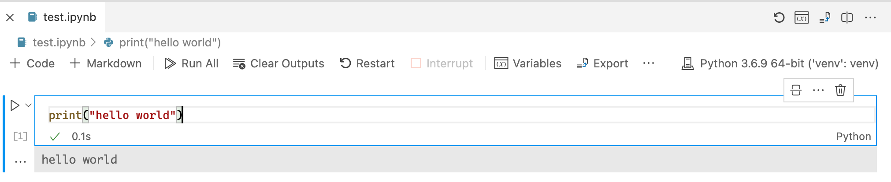
Updated Quick Pick & suggest widget colors
We've update the focus state in the Quick Pick and suggest widget to better align with our tree widget styles. This introduces a few new color tokens that control focus foreground:
list.focusHighlightForegroundquickInputList.focusForegroundeditorSuggestWidget.selectedForeground
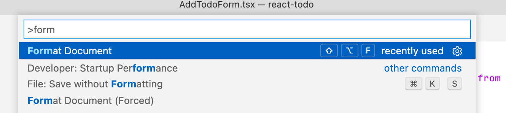
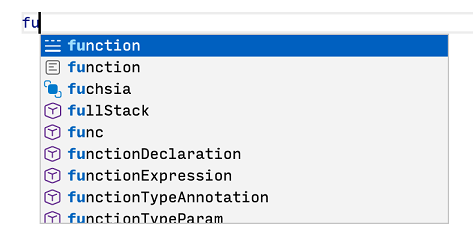
Icon Theme: Fluent Icons
Updated Touch Bar icons for macOS
We've updated our macOS Touch Bar icons so they align with our updated iconography style.
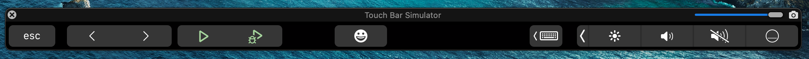 Default view
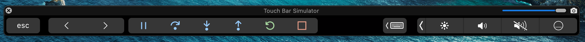 While debugging
Context menus for webviews
VS Code now supports showing a simple context menu inside webviews, such as the Markdown preview, release notes, and Extension Details pages:
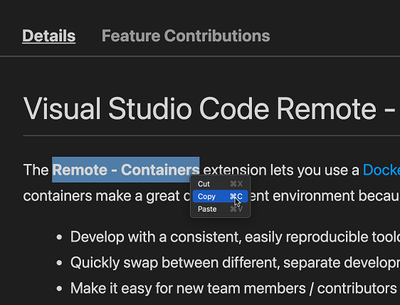
This context menu currently contains actions for copy and pasting text. We may add additional actions to the menu in the future.
If this context menu is interfering with a webview in your extension, you can prevent it from showing up by calling preventDefault on the contextmenu event:
document.body.addEventListener('contextmenu', e => {
e.preventDefault(); // cancel the built-in context menu
});
Editor
Suggestion preview
With the new setting editor.suggest.preview enabled, a preview of the selected suggestion or snippet is shown at the cursor position.
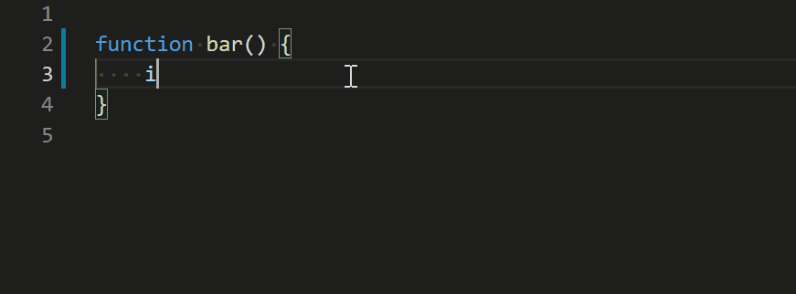
Theme: Dark+ (default dark)
Hide deprecated suggestions
There is a new setting editor.suggest.showDeprecated, which defaults to on, but when turned off, suggestions will not show items that are marked as deprecated.
Integrated Terminal
Terminal tabs
Terminal tabs were introduced as a preview feature in 1.56 and are now enabled by default. The new tabs view will only show by default when there are at least two terminals. For single terminals, the tab is "inlined" into the panel title. This also introduces the concept of terminal statuses such as whether a task is running, succeeded, or failed:
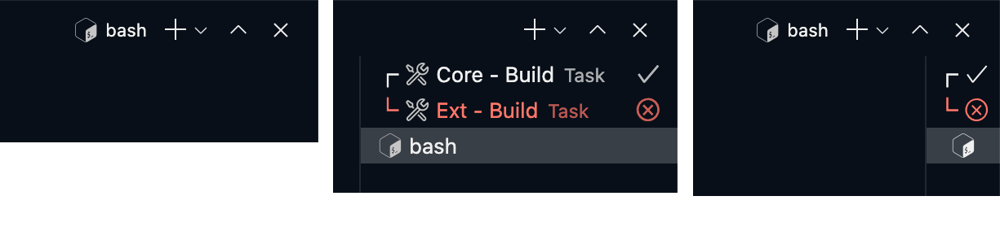
Below are some of the highlights in this release:
- A tab's color can be changed to enable quick navigation and differentiation between them.
- Tabs can be dragged and dropped to allow for rearranging.
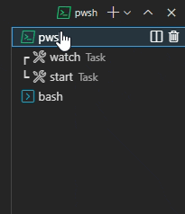 - Dragging a tab in a terminal group into the empty area will remove it from the group (unsplit the terminal, also available via the context menu).
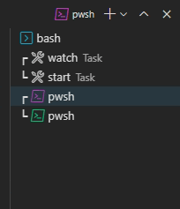 - Dragging a tab into the main terminal area allows joining a group (also available via the context menu).
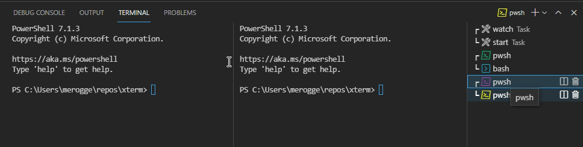 - Alt now splits the terminal when clicking on a tab, the + button, or the single tab. The same works for middle-click to kill a terminal.
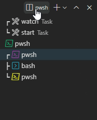 - The inline actions won't be shown unless the tabs list is sufficiently large to avoid accidentally splitting/killing terminals.
- When killing a terminal such that there will only be one, the tabs list won't hide until the mouse leaves the view.
If you're not a fan of the new UX, you can go back to the dropdown by setting "terminal.integrated.tabs.enabled": false, the plan is to continue to support this as an option going forward.
Terminal profile improvements
The terminal profile system has many improvements in this release, here are some highlights:
defaultProfilewill be respected if the terminal is restored upon launching VS Code and will be used for tasks and debugging.- Intellisense now works in
settings.jsonforiconanddefaultProfile. overrideNamenow works for the default profile.defaultProfilecan now be set in workspace settings. This is also now controlled by the new Workspace Trust feature.- If
defaultProfileandshellorshellArgssettings are used, you will now be asked to migrate the deprecated settings to the profiles system. colorcan now be set on a profile.
Title sequence support
The setting terminal.integrated.experimentalUseTitleEvent setting has been promoted to stable as terminal.integrated.titleMode. By default, this setting will be executable, which names terminals based on the detected foreground process:
When this is set to sequence, the title will be based on what the shell sets it to. This needs shell support to work, an example of this in action is oh-my-zsh's default prompt, which shows additional information about the session:
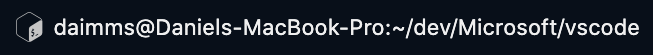
Improved launching with clean environment
The setting terminal.integrated.inheritEnv has been available since the v1.36 but the implementation had some flaws where it could fail due to permissions issues on Linux and may not work as expected on macOS.
Due to improvements to how VS Code sets up its underlying environment, it's now possible to access the initial environment it was launched with, which is how most terminals work. When inheritEnv is set to true, VS Code will now use the initial environment and, when false, use the sourced "shell environment". This setting can help the terminal act more like a regular terminal. However, you may run into problems if your profile/rc configuration is not set up correctly.
Native line wrapping support on Windows
Line wrapping in the terminal drives task problem matchers and link detection. Historically, the Windows terminal has used a heuristic to flag lines as wrapped since the emulation technology that simulates a Unix pty didn't support wrapping. This changed on recent versions of Windows, and when updating to Windows 10 21376+ (currently Insiders only), this heuristic will be disabled and wrapped lines should work correctly as in Windows Terminal.
Tasks
Task status on terminal tab
The status of a task is now shown in its terminal tab. For background tasks, the status is only shown when there is an associated problem matcher.
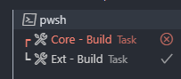
Automatically close task terminals
The task presentation property has a new close property. Setting close to true will cause the terminal to close when the task exits.
{
"type": "shell",
"command": "node build/lib/preLaunch.js",
"label": "Ensure Prelaunch Dependencies",
"presentation": {
"reveal": "silent",
"close": true
}
}
Debugging
JavaScript debugging
As usual, the complete list of changes can be found in the vscode-js-debug changelog.
Edge Developer Tools integration
The JavaScript debugger integrates with the Microsoft Edge Developer Tools to provide a DOM, style, and network inspector for browser debugging, accessible via the new "Inspect" icon in the debug toolbar.
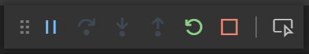
The short video below demonstrates selecting the "Inspect" button and navigating through elements in Edge DevTools.
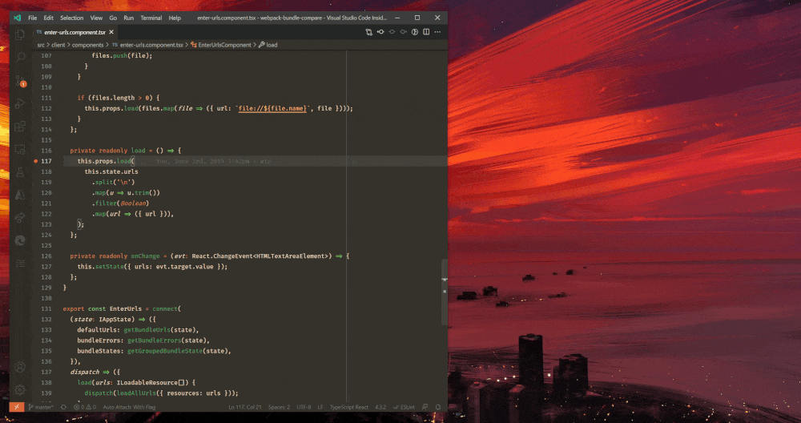 Theme: Codesong
If you aren't already using Microsoft Edge for browser debugging, you can switch to it by replacing "type": "chrome" or "type": "pwa-chrome" with "type": "pwa-msedge" in your launch.json. This is also supported in Blazor applications by setting "browser": "edge" in its launch config.
Support for renamed identifiers in sourcemaps
A long-requested feature, the JavaScript debugger now supports renamed identifiers in sourcemaps. This is particularly useful when debugging minified code:
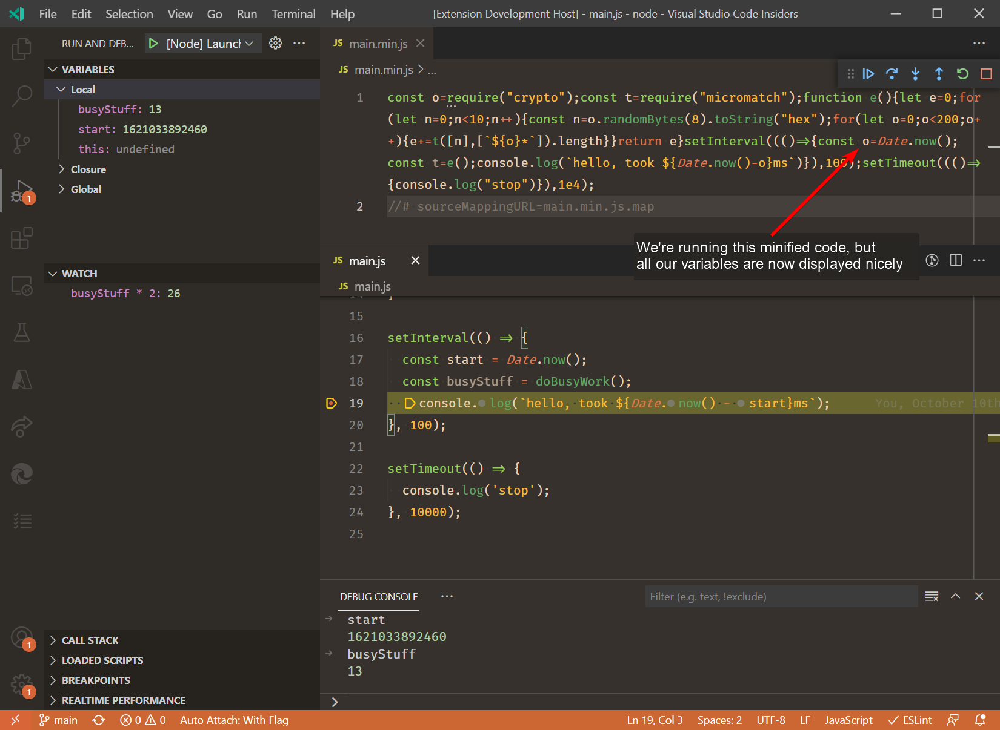 Theme: Codesong
Renamed variables are supported in the Variables view, Watch view, and in the Debug Console REPL. You can check whether your tooling emits renames by looking for a non-empty "names" array in the sourcemap files it generates.
Reveal hit breakpoint in the BREAKPOINTS view
When a breakpoint gets hit, VS Code now selects and reveals it in the BREAKPOINTS view. This should make it easier to understand which exact breakpoint has caused the program to break.
Currently only the JS-debug extension supports this feature, but we expect other debug extensions to follow soon.
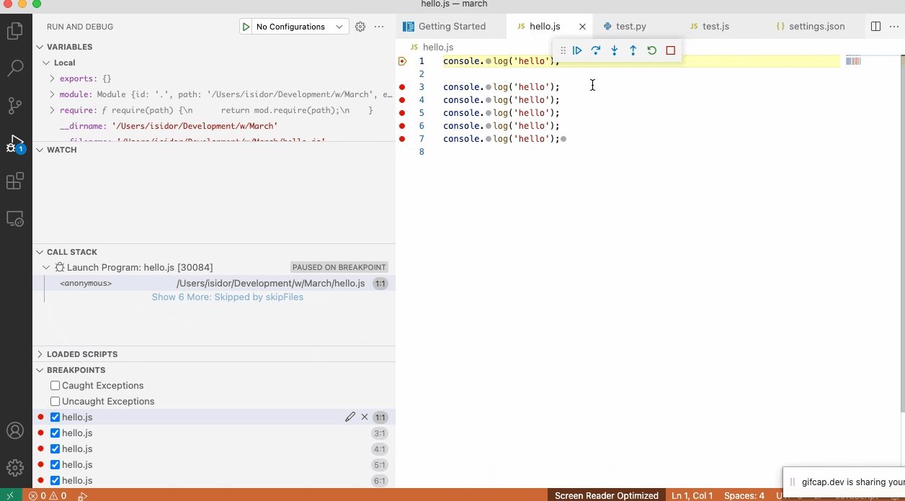
Languages
TypeScript 4.3.2
VS Code now ships with TypeScript 4.3.2. This major update includes many TypeScript language improvements, along with many improvements and bug fixes for JavaScript and TypeScript tooling.
You can read more about TypeScript 4.3 on the TypeScript blog.
JSDoc @link support
VS Code now supports JSDoc @link tags in JavaScript and TypeScript comments. These let you create clickable links to a symbol in your documentation:
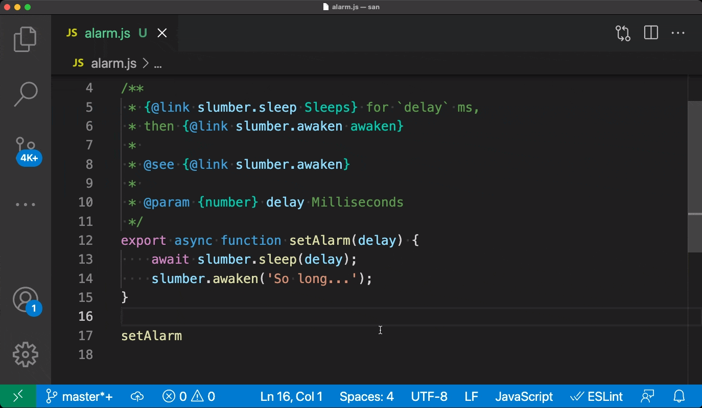
JSDoc @link tags are written as: {@link symbolName}. You can also optionally specify text to be render in place of the symbol name: {@link class.property Alt text}.
@link is supported in hovers, suggestions, and signature help. We have also updated the VS Code extensibility type declaration file vscode.d.ts to use @link.
Completions in import statements
Auto import in JavaScript and TypeScript automatically add imports when you accept a suggestion. With VS Code 1.57, they now also work when writing an import statement itself:
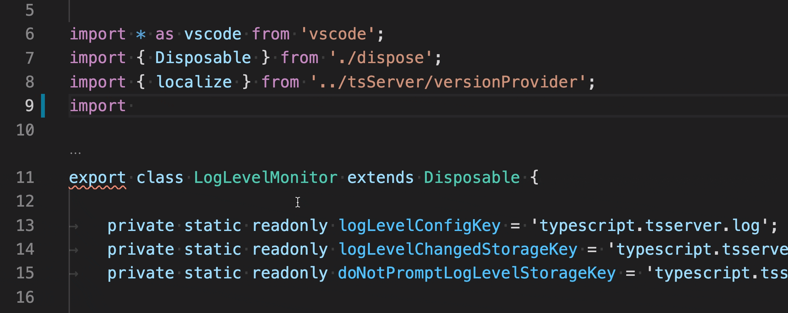
This can be a time saver if you ever need to manually add an import.
Go to Definition for non JS/TS files
Many modern JavaScript bundlers and frameworks use import statements to import assets such as images and stylesheets. We now support navigating through these imports with Go to Definition:
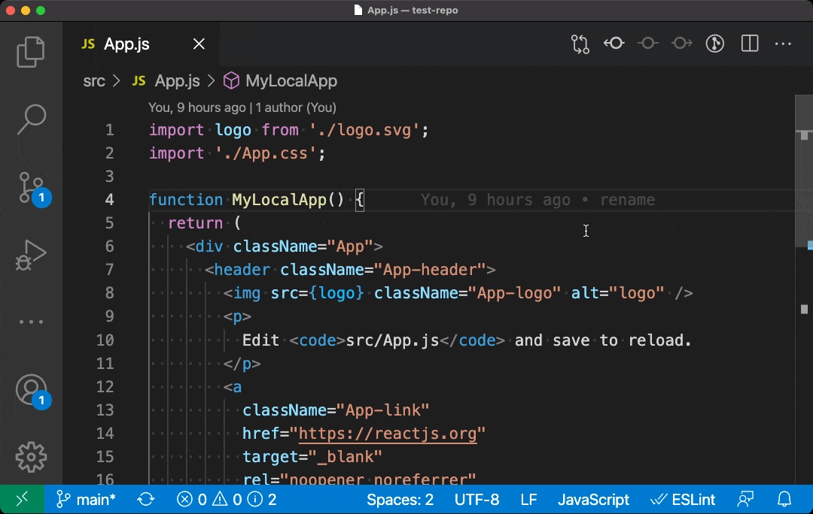
This is probably most useful when using Ctrl/Cmd click to navigate through your code.
Sort imports source action
The Sort imports Code Action for JavaScript and TypeScript sorts your imports. Unlike Organize imports however, it does not remove any unused imports.
You can also enable sorting of imports on save by setting:
"editor.codeActionsOnSave": {
"source.sortImports": true
}
Infer function return type Quick Fix
The Infer function return type refactoring for TypeScript adds explicit return type annotations to functions:
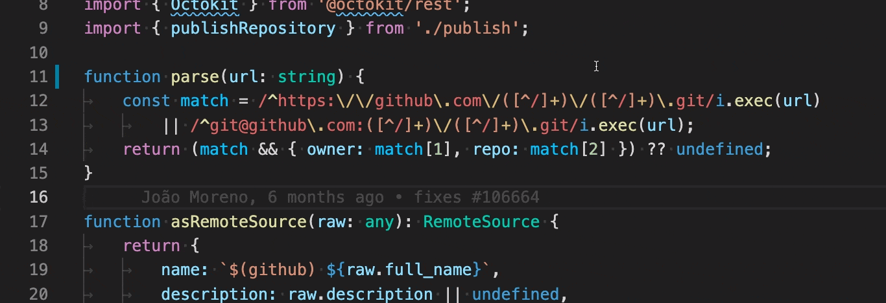
This is useful if you want to add more explicit typings. This refactoring can also save time when you want to extract the return type to a named type/interface, or if you need to modify a function's return type.
Prompt to disable TS Server logging
VS Code now prompts you if you have TypeScript server logging enabled for a prolonged period of time:
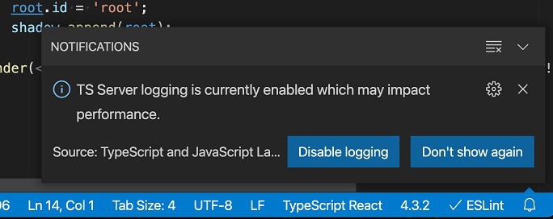
Logging can significantly impact performance so it's best to keep it disabled unless you are actively trying to diagnose an issue.
Contributions to extensions
Remote Development
Work continues on the Remote Development extensions, which allow you to use a container, remote machine, or the Windows Subsystem for Linux (WSL) as a full-featured development environment.
Feature highlights in 1.57 include:
- Control desired protocol for forwarded ports.
- Optional watch for forwarded port collision.
- Dev Containers supports Workspace Trust security feature.
- Better environment variable detection in dev containers.
You can learn about new extension features and bug fixes in the Remote Development release notes.
Extension authoring
Notebook API
We have finalized most of the notebooks API. The API is structured into three separate parts:
- The
NotebookSerializerAPI that, in combination with thenotebookscontribution point, enables VS Code to open, modify, and save notebook documents. - Notebook renderers that present cell output. They are added via the
notebookRenderercontribution point of your extensionspackage.jsonfile. - The
NotebookControllerAPI to generate output for code cells.
Sample of a simple notebook serializer and an echo controller. The serializer uses JSON.parse and stringify with special handling for empty files. The controller returns the upper-case variant of the cell text - once as plain text and once as html.
// serialize/deserialize notebook
vscode.workspace.registerNotebookSerializer(
'echobook',
new (class implements vscode.NotebookSerializer {
// serializer is relying on JSON.parse/stringify
deserializeNotebook(content: Uint8Array) {
return JSON.parse(new TextDecoder().decode(content) || '{"cells":[]}');
}
serializeNotebook(data: vscode.NotebookData) {
return new TextEncoder().encode(JSON.stringify(data));
}
})()
);
// notebook controller
vscode.notebooks.createNotebookController(
'myId',
'echobook',
'Echo',
(cells, _notebook, controller) => {
for (let cell of cells) {
// execution means to echo in upper-case, once as plain text and once as html
const execution = controller.createNotebookCellExecution(cell);
execution.start();
const echo = cell.document.getText().toUpperCase();
const textItem = vscode.NotebookCellOutputItem.text(echo, 'text/plain');
const htmlItem = vscode.NotebookCellOutputItem.text(`<b>${echo}</b>`, 'text/html');
const output = new vscode.NotebookCellOutput([textItem, htmlItem]);
execution.replaceOutput(output);
execution.end(true);
}
}
);
The example statically registers the notebook type for *.echobook files. Also, VS Code will emit an onNotebook:echobook activation event whenever such notebooks are opened.
"contributes": {
"notebooks": [{
"type": "echobook",
"displayName": "Echobook",
"selector": [{
"filenamePattern": "*.echobook"
}]
}]
}
Status bar item 'id' and 'name' properties
We finalized the API for StatusBarItem identifier and name properties. The identifier can be passed from the new overload of the createStatusBarItem method while the name property can change dynamically on the StatusBarItem itself.
These new properties are used for the context menu on the Status bar to give individual entries a name and for allowing a user to show and hide entries. If you do not provide these properties, the menu will aggregate all status entries from one extension under a single entry.
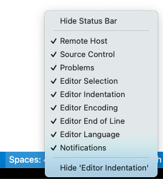
If your extension contributes to the Status bar, consider updating to the new API.
Print a message in new terminals
When creating a terminal using window.createTerminal, it's now possible to set a message via TerminalOptions.message that is printed at the top of the terminal. This message supports ANSI escape sequences to enable text styles:
vscode.window.createTerminal({
name: `My terminal`,
message: '\x1b[3;1mSome custom message\x1b[0m'
});
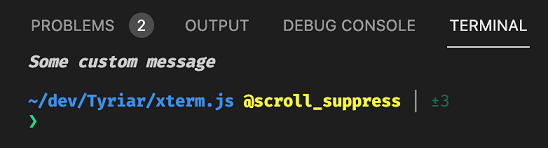
New theme colors for inline values
New colors were added to theme the debugger inline values:
editor.inlineValuesBackground: color for the debug inline value foreground texteditor.inlineValuesForeground: color for the debug inline value background.
As a reminder, inline values are shown during debugging for debug extensions that have inline value providers registered or if the setting debug.inlineValues is true.
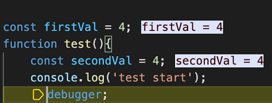
vscode-webview.d.ts
The newly published @types/vscode-webview package adds typings for the API that VS Code exposes inside of webviews.
You can install these types with npm install --save-dev @types/vscode-webview. If the webview types are not being picked up in your project, try adding them to the typeAcquisition section of your jsconfig / tsconfig:
"typeAcquisition": {
"include": [
"@types/vscode-webview"
]
}
Or add a triple-slash reference in your code:
///<reference types="@types/vscode-webview"/>
Improved webview array buffer transfers
In previous versions of VS Code, sending typed arrays to or from a webview had a few quirks:
- Typed arrays, such as
UInt8Array, serialize inefficiently. This can cause performance issues when you need to transfer many megabytes of data. - Sent typed arrays are not recreated as the correct type on the receiving side. If you send a
UInt8Array, the receiver instead gets a generic object that has the data values of theUInt8Array.
While both of these issues are bugs, we also can't fix them without potentially breaking extensions that rely on the existing behavior. At the same time, there's zero reason a newly written extension would want the current confusing and inefficient behavior.
Therefore, we've decided to leave the existing behavior in place for existing extensions but move new extensions onto the more correct behavior. This is done by looking at the engines value in your extension's package.json.
"engines": {
"vscode": "^1.57.0",
}
If the extension targets VS Code 1.57+, then typed arrays should be recreated on the receiver side and the transfer of large typed arrays to and from webviews should be much more efficient.
parentSession on Debug Sessions
Some time ago, VS Code added support for hierarchical debug sessions, but no information about the hierarchy was exposed in the extension APIs. To address this, there is a new property on the DebugSession interface that references the parent session, if any. A session's parent will never change.
export interface DebugSession {
/**
* The parent session of this debug session, if it was created as a child.
* @see DebugSessionOptions.parentSession
*/
readonly parentSession?: DebugSession;
// ...
Improved VS Code Insiders version targeting
When working on extensions that use proposed APIs, it's possible that a new Insiders build is released with breaking changes. In order to provide a more seamless transition for users, you can now target Insiders versions precisely with a date tag. For example, setting engines.vscode to ^1.56.0-20210428 will target any VS Code 1.56 (or newer) build that was created on or after 0:00 UTC, April 28, 2020. This allows you to safely release post-dated extension updates before an upcoming Insiders version is released.
"engines": {
"vscode": "^1.56.0-20210428",
}
Tree hovers support command URIs
When a TreeItem has a trusted Markdown tooltip, that tooltip can contain commands of the format [this is a link](command:workbench.action.quickOpenView). This follows the same format as all other places where command links are supported in Markdown.
Proposed extension APIs
Every milestone comes with new proposed APIs and extension authors can try them out. As always, we want your feedback. This is what you have to do to try out a proposed API:
- You must use Insiders because proposed APIs change frequently.
- You must have this line in the
package.jsonfile of your extension:"enableProposedApi": true. - Copy the latest version of the vscode.proposed.d.ts file into your project's source location.
You cannot publish an extension that uses a proposed API. There may be breaking changes in the next release and we never want to break existing extensions.
Testing
We intended to finalize the first parts of the testing APIs this iteration, but it was deferred due to the number of other in-flight features. While there were no breaking changes to the testing APIs this iteration, we continued to make progress on its editor experience. For example, the Peek view gained a split view that allows you to browse the results of current and past test runs.
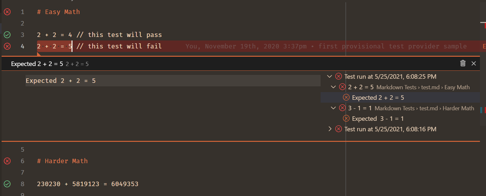 Theme: Codesong
Testing gained a new set of keybindings as chords starting with Ctrl+;, the Peek view now has better support for Markdown messages, and many bugs were fixed.
If you use the Test Explorer UI extension for tests, you can toggle on the setting testExplorer.useNativeTesting to switch to the new, native UI. In the next iteration, we plan to increase socialization of this setting and begin adoption with partner extension teams.
Terminal profile contributions
This API will enable extensions to contribute to the terminal profile system. An extension needs to do a few things to get this to work. First contribute the profile in the package.json:
"contributes": {
"terminal": {
"profiles": [
{
"title": "Profile from extension",
"id": "my-ext.terminal-profile",
"icon": "lightbulb"
}
]
},
}
Then activate the extension on the new onTerminalProfile activation event:
"activationEvents": [
"onTerminalProfile:my-ext.terminal-profile"
]
Lastly, register the provider in the activation event:
vscode.window.registerTerminalProfileProvider('my-ext.terminal-profile', {
provideProfileOptions(token) {
return {
name: 'Profile from extension',
shellPath: 'cmd.exe'
};
}
});
If the proposed API is enabled, the extension contributed profile should show up in the profiles list:
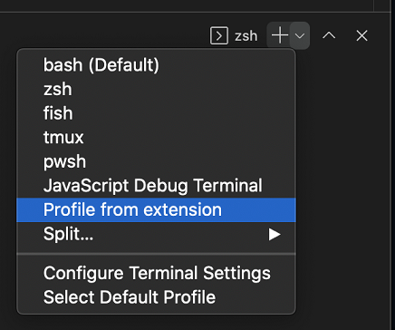
iconPath support in terminal options
The standard iconPath type is supported on TerminalOptions and TerminalExtensionOptions to set the terminal's icon, which is displayed on the terminal's tab:
readonly iconPath?: Uri | { light: Uri; dark: Uri } | ThemeIcon;
Change title of Pseudoterminal
The new event Pseudoterminal.onDidChangeName enabled control of Pseudoterminal-based terminals:
const writeEmitter = new EventEmitter<string>();
const nameEmitter = new EventEmitter<string>();
const pty = {
onDidWrite: writeEmitter.event,
open: () => writeEmitter.fire('Type to change the title of the terminal'),
close: () => {
/* noop*/
},
handleInput: (data: string) => nameEmitter.fire(data)
};
const terminal = vscode.window.createTerminal({
name: `My Terminal`,
pty
});
terminal.show();
Enable file system providers to declare a file as readonly
File system providers can now mark individual files as readonly via a new permissions property on the FileStat by setting the value of the property to FilePermission.Readonly. Readonly files are not editable.
Note: If all files should be treated readonly, you can use the existing isReadonly option when calling registerFileSystemProvider.
Support workspace URIs in asExternalUri
The pre-existing vscode.env.asExternalUri API now supports handling workspaces URIs. This allows extension authors to create system-wide URIs that directly open the given workspace.
For example:
const uri = await vscode.env.asExternalUri('file:///Users/john/work/code');
The resulting uri can be opened by the operating system and VS Code will open that workspace.
Engineering
Progress for Electron sandbox support
This milestone we continued to make the VS Code window ready for enabling Electron's sandbox and context isolation features.
Specifically:
- We removed Node.js dependencies from more code that is used in the renderer.
- We continued investigating dropping
webviewusage entirely and switching toiframefor our custom views and editors.
Documentation
VS Code at Build 2021
If you missed the Microsoft Build 2021 developer event, you can still watch the sessions on-demand. Check out the Visual Studio Code at Build 2021 blog post, where we've put together a list of sessions we think will be of interest to VS Code users.
Browser debugging
A new topic Browser debugging in VS Code describes the built-in debugging support for the Edge and Chrome browsers. You can configure VS Code to either launch a new browser debugging session (via the Debug: Open Link command) or attach to a running browser.
PyTorch
There is a new topic on how to use the PyTorch machine learning framework within VS Code. In the PyTorch support in VS Code article, you'll learn how Jupyter Notebooks can be extended with PyTorch and TensorFlow data types.
Notable fixes
- 71966: Often getting full window hangs
- 85332: Windows: freeze on file delete
- 95077: Terminal "word" link provider does not support wrapping
- 108804: Do not wait for shell environment resolution before opening window
- 120004: Weird letter spacing in Integrated Terminal for VS Code
- 125035: Debug Console filter text should be preserved across reloads
- iOS/iPadOS: Several fixes were made for the iOS/iPadOS platform
Thank you
Last but certainly not least, a big Thank You to the following people who contributed this month to VS Code:
Contributions to our issue tracking:
- John Murray (@gjsjohnmurray)
- Andrii Dieiev (@IllusionMH)
- Nicholas Rayburn (@nrayburn-tech)
- Alessandro Fragnani (@alefragnani)
- ArturoDent (@ArturoDent)
Contributions to vscode:
- @Ashray123 (Ashray Jha): Modified Markdown preview nested list styling PR #124445
- @barbaravaldez (Barbara Valdez): Initial implementation of drag and drop api PR #122239
- @CommaNet (Melvin ): Update README.md PR #124654
- @danielgary (Daniel Gary): Replaced wmic call with windows-process-tree PR #123895
- @DonJayamanne (Don Jayamanne): Preserve execution summary when converting dto PR #124549
- @eltociear (Ikko Ashimine): fix typo in files.ts PR #124693
- @gjsjohnmurray (John Murray)
- Allow FileSystemProvider to stat a file as readonly (#_73122) PR #111237
- fix #123831 handle command URL in ErrorResponse Message from debug adapter PR #123833
- @habibkarim (Habib Karim): Implement Pseudoterminal.onDidChangeName PR #115276
- @hantatsang (Sang): Fix welcome view links missing hover color PR #121835
- @huszkacs (Csaba Huszka): Fixes android screen-keyboard backspace issue. PR #124288
- @inidaname (Hassan Sani): added bottom spacing for table in Markdown preview PR #124385
- @jeanp413 (Jean Pierre)
- Fixes pascalCase snippet formatter fails to process numbers PR #122796
- Add support for file drop on a terminal tab PR #123429
- Fixes incorrect decoding of percent encoded markdown links PR #123584
- Fixes process explorer does not show twistie PR #123910
- Fixes process explorer list styles are not working PR #123919
- Fixes terminal find widget should not cover tabs PR #124317
- Fixes listener leak while updating terminal pane actions PR #124741
- Preserve repl filter value through reloads PR #125221
- @kabel (Kevin Abel): Implement GitHub Enterprise authn provider PR #115940
- @leilapearson (Leila Pearson): New Sort Order Lexicographic Options setting for Explorer PR #97272
- @mzainuddin51 (Mohammad Zainuddin): fix incorrect links for issue #123772 PR #124203
- @nrayburn-tech (Nicholas Rayburn)
- add color customizations for inline debug values PR #123065
- Fix issue reporter not closing on submit and debounce submissions PR #123340
- Add showDeprecated option to suggest, filters out deprecated options PR #123351
- add notification if tsserver logs are left on for more than 7 days PR #124149
- option to hide terminal tabs if there is only a single group PR #124480
- @plankp (Paul Teng): Add pattern matching 'in' PR #121941
- @rtzoeller (Ryan Zoeller): Register .mak extension for the Make language PR #122614
- @shskwmt (Shunsuke Iwamoto): Fixes #116335: Send a file path text to the dropped terminal area PR #116621
- @suzmue (Suzy Mueller): Fix setting the debug call stack display for exceptions PR #123726
- @tejasvi (Tejasvi S. Tomar): Improve docs for TextEditor.setDecorations PR #122785
- @ValeraS (Valeriy): fix: use addListener instead of addEventListener to to observe media query lists PR #121557
- @vibhavsarraf (Vibhav): Normalize path in terminal word links PR #123246
- @wendellhu95 (Wendell): test: add test for event Relay PR #119070
Contributions to vscode-css-languageservice:
- @jeanp413 (Jean Pierre): Fixes link resolution for filename with a suffix containing a dot PR #241
Contributions to vscode-eslint:
- @edupsousa (Eduardo Pereira de Sousa): Add severity "off" to eslint.rules.customizations PR #1243
- @karlhorky (Karl Horky): Document "node" for system version of Node.js PR #1247
Contributions to vscode-js-debug:
- @danielgary (Daniel Gary): 990 - Support using launch configuration name as terminal title PR #991
- @lhchavez: feat: Allow callers of debugServerMain.ts to specify the host PR #1006
Contributions to vscode-languageserver-node:
- @yanmofeixi: Add more info to client not ready error PR #764
Contributions to vscode-pull-request-github:
- @IllusionMH (Andrii Dieiev): Removed TSLint recommendation and mentions left PR #2758
Contributions to vscode-vsce:
- @jedwards1211 (Andy Edwards): use ignore npm package instead of custom code for .vscodeignore PR #418
- @oliversalzburg (Oliver Salzburg): fix: Missing error response handling PR #564
Contributions to language-server-protocol:
- @DanTup (Danny Tuppeny): Clarify how textDocument/selectionRange can handle some missing results PR #1272
- @HO-COOH: Update specification-3-16.md PR #1259
- @narnaud (Nicolas Arnaud-Cormos)
- @NTaylorMullen (N. Taylor Mullen)
Contributions to monaco-languages:
- @akonatala (apoorva konatala): Update cameligo language support PR #137
- @anark: Add aliases and mimetypes to liquid language PR #136
- @mattvague (Matt Vague): Fix incorrect filenames for liquid PR #135
Contributions to monaco-typescript:
- @paranoidjk (paranoidjk): fix: support go to definition for extraLib file PR #79